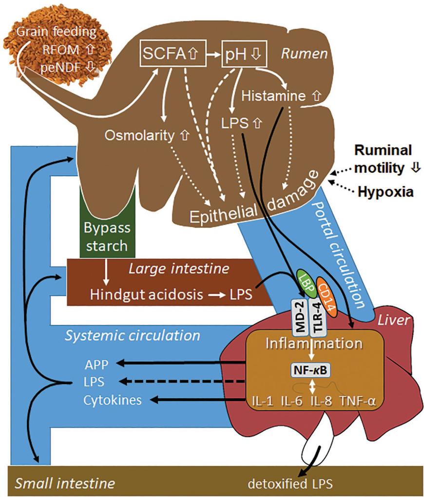
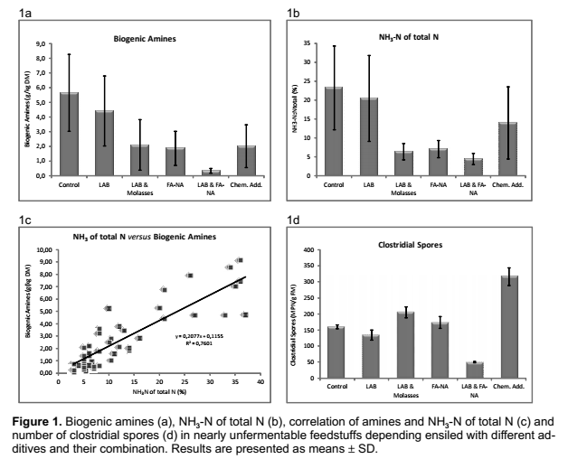

| Invloed van tijd en weer op Vit D3 gehalte in grassen. | |
|---|---|
| Tijd | IE/gram |
| Spaanse Dravik, gemaaid 11-7-1951 11:00 | |
| 1:30 p.m. 6/21 | 0.10 |
| 1:30 p.m. 6/22 | 0.87 |
| Noon 6/24 | 0.52 |
| Luzerne, gemaaid 21-6-1951 13:30 | |
| 1:30 p.m. 6/21 | 0.25 |
| 1:30 p.m. 6/22 | 0.82 |
| Noon 6/24 | 0.36 |
| 2e S. Luzerne, gemaaid 15/8-1950 7:00 | |
| 7 a.m. 8/15 | 0.07 |
| 11 a.m. 8/16 | 0.28 |
| 4 p.m. 8/17 | 1.00 |
| Spaanse Dravik en Luzerne, gemaaid 28/6/1950 7:00 | |
| 7 a.m. 6/28 | 0.11 |
| 7 p.m. 6/28 | 0.20 |
| 12 noon 6/29 | 1.00 |
| 10 a.m. 6/30 | 1.60 |
| 5 p.m. 7/11 | 0.42 |
| 1 p.m. 7/13 | 1.19 |
| 5 p.m. 7/13 | 2.78 |
Presentatie Studiegroep Ommen
2026-01-27
Voerkwaliteit

| Eigenschappen van de folie. | ||
|---|---|---|
| OB | PE | |
| Nominal thickness | 45 | 180 |
| Measured thickness | 44.1 ± 0.81 | 176.2 ± 3.92 |
| Oxygen permeability | 39.4 ± 1.62 | 1,565.0 ± 29 |
| Puncture resistance | 7.5 ± 1.34 | 5.2 ± 0.42 |
| MD Elmendorf tear, g | 446.7 ± 43 | 284.1 ± 43 |
| CD Elmendorf tear, g | 1,104 ± 119 | 2,082.1 ± 50.3 |
| Eigenschappen van het ruwvoer. | |||||||
|---|---|---|---|---|---|---|---|
| CCOR | OB50 | OB100 | OB150 | ST50 | ST100 | ST150 | |
| DM (oven), % | 35.00 | 35.20 | 35.20 | 34.80 | 37.80 | 36.30 | 36.70 |
| DM (corr), % | 35.70 | 36.00 | 35.90 | 35.80 | 38.90 | 38.40 | 38.80 |
| pH | 3.77 | 3.94 | 3.86 | 3.88 | 4.41 | 4.36 | 4.23 |
| NH3-N, % of total N | 5.60 | 5.40 | 5.40 | 5.20 | 6.20 | 6.30 | 6.40 |
| Lactate, % of DM | 7.80 | 6.90 | 6.00 | 6.10 | 4.60 | 5.50 | 5.50 |
| Acetate, % of DM | 0.95 | 0.85 | 0.74 | 1.18 | 0.63 | 0.63 | 0.64 |
| Propionate, % of DM | 0.65 | 0.42 | 0.37 | 0.49 | 0.47 | 0.46 | 0.42 |
| Butyrate, % of DM | 0.07 | 0.18 | 0.19 | 0.08 | 0.43 | 0.36 | 0.22 |
| Ethanol, % of DM | 0.27 | 0.34 | 0.66 | 0.61 | 0.89 | 0.69 | 0.84 |
| Yeasts, cfu/g | 0.10 | 4.72 | 3.92 | 3.94 | 6.42 | 5.11 | 4.75 |
| Molds, cfu/g | 0.10 | 0.10 | 0.10 | 0.10 | 2.61 | 2.44 | 2.18 |
| Kwaliteit van de snijmais. | |||||||
|---|---|---|---|---|---|---|---|
| CCOR | OB50 | OB100 | OB150 | ST50 | ST100 | ST150 | |
| Ash, % of DM | 3.20 | 3.40 | 3.50 | 3.40 | 3.60 | 3.60 | 3.70 |
| CP, % of DM | 8.20 | 8.20 | 8.90 | 8.50 | 9.00 | 8.90 | 9.30 |
| Starch, % of DM | 36.50 | 34.50 | 34.00 | 35.40 | 30.40 | 30.10 | 33.10 |
| NDF, % of DM | 42.50 | 44.90 | 43.90 | 44.80 | 46.60 | 45.80 | 46.50 |
| NDF digestibility, % of NDF | 47.10 | 49.30 | 46.80 | 46.50 | 46.30 | 45.80 | 47.80 |
| IVDMD, % | 70.60 | 69.30 | 69.30 | 67.80 | 66.20 | 66.00 | 65.90 |
| TDN-1x, % | 64.30 | 63.50 | 63.50 | 63.10 | 60.20 | 61.50 | 61.30 |
| NE L-3x, Mcal/kg of DM | 1.42 | 1.38 | 1.41 | 1.39 | 1.31 | 1.33 | 1.34 |
| Milk, kg/t of DM | 1294.00 | 1255.10 | 1265.10 | 1254.80 | 1152.10 | 1188.20 | 1193.10 |
| DM loss, % | 5.14 | 5.07 | 4.91 | 7.69 | 9.86 | 10.90 | 7.69 |
Bron: Lima e.a. (2017)
1. Diergezondheid:

| Kenmerk | basis | Sara1 | Sara2 |
|---|---|---|---|
| LPS | 14692.00 | 131209.0 | 168285.00 |
| Methylalanine | 37.30 | 37.3 | 46.00 |
| Putrescine | 14.00 | 32.2 | 30.70 |
| Cadaverine | 15.90 | 24.2 | 24.30 |
| Histamine | 2.03 | 13.0 | 5.19 |


Ruwvoerwinning. Snel conserveren
Verliezen gaan na het inkuilen door tot pH stabiel (laag) is. pH van kuil daalt als er melkzuur wordt gevormd. Dat wordt pas gevormd als zuurstof in kuil op is.


| Onbehandeld | Geïnoculeerd | Aangezuurd | |
|---|---|---|---|
| pH | 3.66a | 3.43c | 3.52b |
| DM, g/kg of FM | 177.7a | 180.0a | 181.7a |
| Lactic acid, g/kg of DM | 103.56a | 135.75a | 93.85a |
| Acetic acid, g/kg of DM | 28.40a | 14.14b | NDc |
| Lactic acid:acetic acid | 3.85b | 9.14a | NDc |
| Total N, g/kg of DM | 19.18ab | 18.07bc | 19.69a |
| Ammonia N, g/kg of total N | 54.38a | 18.45b | 54.73a |
| RUBISCO, % of herbage RUBISCO | 51b | 62a | 53ab |
| letters geven significante verschillen aan | |||
Bron: Davies e.a. (1998)
Ruwvoerwinning: afdekken
| Eigenschappen van folie in onderzoek. | ||
|---|---|---|
| OB | PE | |
| Nominal thickness | 45 | 180 |
| Measured thickness | 44.1 ± 0.81 | 176.2 ± 3.92 |
| Oxygen permeability | 39.4 ± 1.62 | 1,565.0 ± 29 |
| Puncture resistance | 7.5 ± 1.34 | 5.2 ± 0.42 |
| MD Elmendorf tear, g | 446.7 ± 43 | 284.1 ± 43 |
| CD Elmendorf tear, g | 1,104 ± 119 | 2,082.1 ± 50.3 |
| Microbiële en fermentatieeigenschappen van kuilen. | |||||||
|---|---|---|---|---|---|---|---|
| CCOR | OB50 | OB100 | OB150 | ST50 | ST100 | ST150 | |
| DM (oven), % | 35.00 | 35.20 | 35.20 | 34.80 | 37.80 | 36.30 | 36.70 |
| DM (corr), % | 35.70 | 36.00 | 35.90 | 35.80 | 38.90 | 38.40 | 38.80 |
| pH | 3.77 | 3.94 | 3.86 | 3.88 | 4.41 | 4.36 | 4.23 |
| NH3-N, % of total N | 5.60 | 5.40 | 5.40 | 5.20 | 6.20 | 6.30 | 6.40 |
| Lactate, % of DM | 7.80 | 6.90 | 6.00 | 6.10 | 4.60 | 5.50 | 5.50 |
| Acetate, % of DM | 0.95 | 0.85 | 0.74 | 1.18 | 0.63 | 0.63 | 0.64 |
| Propionate, % of DM | 0.65 | 0.42 | 0.37 | 0.49 | 0.47 | 0.46 | 0.42 |
| Butyrate, % of DM | 0.07 | 0.18 | 0.19 | 0.08 | 0.43 | 0.36 | 0.22 |
| Ethanol, % of DM | 0.27 | 0.34 | 0.66 | 0.61 | 0.89 | 0.69 | 0.84 |
| Yeasts, cfu/g | 0.10 | 4.72 | 3.92 | 3.94 | 6.42 | 5.11 | 4.75 |
| Molds, cfu/g | 0.10 | 0.10 | 0.10 | 0.10 | 2.61 | 2.44 | 2.18 |
| Voederwaarde op verschillende plekken in kuilen. | |||||||
|---|---|---|---|---|---|---|---|
| CCOR | OB50 | OB100 | OB150 | ST50 | ST100 | ST150 | |
| Ash, % of DM | 3.20 | 3.40 | 3.50 | 3.40 | 3.60 | 3.60 | 3.70 |
| CP, % of DM | 8.20 | 8.20 | 8.90 | 8.50 | 9.00 | 8.90 | 9.30 |
| Starch, % of DM | 36.50 | 34.50 | 34.00 | 35.40 | 30.40 | 30.10 | 33.10 |
| NDF, % of DM | 42.50 | 44.90 | 43.90 | 44.80 | 46.60 | 45.80 | 46.50 |
| NDF digestibility, % of NDF | 47.10 | 49.30 | 46.80 | 46.50 | 46.30 | 45.80 | 47.80 |
| IVDMD, % | 70.60 | 69.30 | 69.30 | 67.80 | 66.20 | 66.00 | 65.90 |
| TDN-1x, % | 64.30 | 63.50 | 63.50 | 63.10 | 60.20 | 61.50 | 61.30 |
| NE L-3x, Mcal/kg of DM | 1.42 | 1.38 | 1.41 | 1.39 | 1.31 | 1.33 | 1.34 |
| Milk, kg/t of DM | 1294.00 | 1255.10 | 1265.10 | 1254.80 | 1152.10 | 1188.20 | 1193.10 |
| DM loss, % | 5.14 | 5.07 | 4.91 | 7.69 | 9.86 | 10.90 | 7.69 |
Bron: Lima e.a. (2017)
Ruwvoerwinning: inkuilmiddel
| Eigenschappen van kuilen ingekuild met drie verschillende inkuilmiddelen over de tijd. | |||||||||
|---|---|---|---|---|---|---|---|---|---|
January
|
April
|
August
|
|||||||
| Control | Lactsil | Lactisil Fresh | Control | Lactsil | Lactisil Fresh | Control | Lactsil | Lactisil Fresh | |
| DM content, % | 35.90 | 36.70 | 35.20 | 36.20 | 36.30 | 35.50 | 36.70 | 37.20 | 35.90 |
| Silage pH | 3.81 | 3.82 | 3.97 | 3.90 | 3.94 | 4.19 | 3.80 | 3.79 | 4.05 |
| l-Lactic acid | 26.40 | 26.40 | 19.00 | 30.10 | 29.20 | 14.60 | 27.80 | 29.00 | 14.50 |
| dl-Lactic acid | 48.70 | 47.90 | 36.10 | 56.20 | 55.70 | 32.40 | 56.20 | 55.50 | 31.50 |
| Acetic acid | 15.50 | 13.90 | 25.40 | 15.50 | 14.10 | 34.50 | 17.10 | 15.30 | 36.50 |
| Propionic acid | 0.16 | 0.09 | 0.67 | 0.08 | 0.09 | 1.74 | 0.27 | 0.10 | 2.33 |
| Butyric acid | 0.02 | 0.02 | 0.02 | 0.02 | 0.02 | 0.03 | 0.03 | 0.06 | 0.03 |
| Ethanol | 10.90 | 7.90 | 9.00 | 9.40 | 10.00 | 9.90 | 9.60 | 11.20 | 10.30 |
| Propanol | 0.72 | 0.44 | 2.43 | 0.62 | 0.60 | 4.94 | 2.02 | 0.61 | 7.16 |
| Propyl acetate | 0.33 | 0.12 | 1.51 | 0.26 | 0.22 | 3.83 | 0.96 | 0.24 | 5.05 |
| 2-Butanol | 0.00 | 0.01 | 0.09 | 0.01 | 0.01 | 0.10 | 0.04 | 0.02 | 0.15 |
| Propylene glycol | 1.35 | 1.36 | 8.47 | 1.29 | 0.97 | 8.20 | 0.98 | 1.40 | 8.20 |
| Ammonia | 0.62 | 0.62 | 0.70 | 0.84 | 0.90 | 1.07 | 0.94 | 0.95 | 1.13 |
| Alanine | 3.13 | 2.98 | 3.67 | 3.50 | 3.58 | 4.54 | 3.87 | 3.55 | 4.71 |
| Glycine | 1.08 | 1.11 | 1.31 | 1.19 | 1.23 | 1.49 | 1.23 | 1.23 | 1.64 |
| Isoleucine | 0.92 | 0.89 | 0.91 | 0.98 | 1.00 | 1.18 | 1.07 | 1.06 | 1.33 |
| Leucine | 2.69 | 2.71 | 2.88 | 3.11 | 3.23 | 3.73 | 3.43 | 3.51 | 4.13 |
| Proline | 1.89 | 1.91 | 1.96 | 2.22 | 2.21 | 2.52 | 2.40 | 2.47 | 2.95 |
| Valine | 1.30 | 1.28 | 1.45 | 1.41 | 1.45 | 1.78 | 1.50 | 1.51 | 1.94 |
| Glucose | 1.98 | 1.27 | 0.46 | 2.92 | 2.52 | 0.57 | 2.82 | 3.77 | 0.71 |
| Benzoic acid | 0.01 | 0.01 | 0.01 | 0.01 | 0.02 | 0.02 | 0.01 | 0.00 | 0.01 |
| LAB2 | 7.08 | 7.05 | 7.39 | 7.16 | 7.21 | 8.39 | 7.10 | 6.69 | 7.80 |
| Yeast | 6.45 | 6.27 | 4.91 | 6.09 | 6.24 | 5.43 | 4.97 | 5.00 | 3.34 |
| Molds | 3.44 | 3.00 | 3.78 | 3.64 | 4.09 | 3.01 | 3.35 | 3.17 | |
| Silage temperature in bunker, °C | 18.30 | 17.80 | 18.80 | 15.00 | 15.20 | 16.80 | 16.90 | 17.60 | 18.60 |
| Aerobic stability, h | 39.00 | 37.00 | 88.00 | 36.00 | 33.00 | 53.00 | 37.00 | 43.00 | 100.00 |
| Deoxynivalenol | 592.00 | 532.00 | 653.00 | 714.00 | 574.00 | 634.00 | 503.00 | 553.00 | 631.00 |
| Nivalenol | 177.00 | 254.00 | 303.00 | 227.00 | 338.00 | 297.00 | 268.00 | 270.00 | 187.00 |
| Zearalenone | 15.00 | 42.00 | 43.00 | 52.00 | 58.00 | 25.00 | 35.00 | 90.00 | 57.00 |
- Voor behoud van eiwitkwaliteit: homofermentative middelen
- Voor aerobe stabiliteit: mengsel van homo- en heterofermentatieve middelen